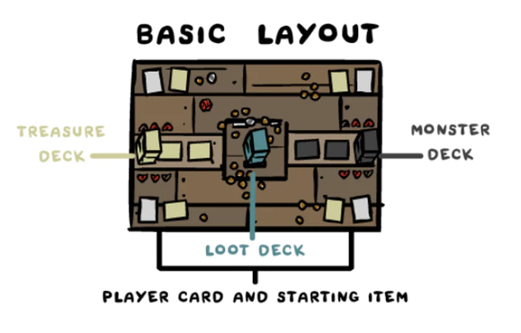
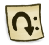
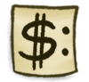

COMO JOGAR
2-4 jogadores revezam jogando cartas de saque (loot) e usando itens para matar monstros com objetivo de ganhar mais saques, itens e algumas vezes almas. O primeiro jogador a ter 4 almas vence o jogo. Cooperação, barganhas e traição são altamente encorajados.
Iniciando o Jogo
Embaralhe os baralhos de saque, monstros e tesouro. Coloque as 100 moedas na mesa.
Coloque 2 cartas de monstros viradas para cima perto do deck de monstro.Estes são os monstros ativos atuais, e cada um ocupa um espaço de monstro ativo, coloque qualquer não-monstro revelado durante esta etapa embaixo do deck de monstros.
Coloque 2 cartas de tesouro viradas para cima perto do deck de tesouro. Estes são os itens atuais da loja.
Embaralhe o deck de personagens e distribua um personagem e seu item inicial para cada jogador.
Todos os jogadores começam com seu personagem desativado (virado de lado) e com seu item recarregado (virado para cima). Se você não for primeiro, você pode ativar seu item inicial antes do seu primeiro turno.
Todos os jogadores começam com 3 cartas de saque e 3 moedas.
Cain joga primeiro, se nao tiver Cain no jogo a pessoa mais triste joga primeiro.
Turno do Jogador
Fase inicial
- Recarregue todos os itens ativos e a carta do seu personagem.
- Efeitos de início de turno desencadeiam (colocando no stack), então os jogadores podem responder. Essa é a primeira oportunidade para jogar efeitos durante o turno.
- Compre 1 carta de saque do deck de saque.
Fase de Ação
Durante a sua fase de ação, o jogador ativo pode fazer qualquer uma ou todas das seguintes ações em qualquer ordem:
- Jogar 1 carta de saque. (Isso pode ser em resposta a qualquer ação)
- Comprar 1 item da loja ou a carta do topo do deck de tesouro por 10 moedas, então substitua qualquer item da loja comprado com a carta do topo do deck de tesouro.
- Atacar um monstro ativo ou a carta do topo do deck dos monstros.
- Ativar a sua carta de personagem para jogar uma carta de saque adicional. (Ativação do personagem pode ser reservada para ativar no turno de outro jogador em resposta a qualquer ação).
Fase final
- Efeitos de fim de turno desencadeiam, então os jogadores podem responder. Esse é a última oportunidade para jogar efeitos neste turno (Se um efeito termina o turno atual, o turno pula para esta etapa).
- Cure todos os jogadores e monstros, então efeitos que duram até o final do turno acabam.
- Se você tem mais de 10 cartas de saque na mao, descarte até ficar com 10.
- Passe o turno para o jogador a sua esquerda.
Cartas

Cartas de Saque
Carta de saque são compradas e mantidas na sua mão. Jogar elas podem mudar instantaneamente o fluxo do jogo em várias formas interessantes. Existem 3 tipos diferentes de carta de saque:
Saque básico - Saque básico vem em forma de moedas, bombas, corações, pílulas e similares, são usadas para ganhar recursos ou ajudar no combate.
Cartas de Tarot - Cartas de tarot são cartas de saque mais avançadas que podem mudar drasticamente o rumo do jogo.
Trinkets - São cartas de saque raras. Uma vez jogados, elas agem como item do tesouro e tem efeitos passivos. Coloque essa carta virada para cima na mesa perto de suas cartas de itens. Elas contam como item quando estão em jogo, e ficam em jogo até serem destruídas.

Carta de Monstros
O baralho de monstros é o coração do jogo. Está cheio de monstros básicos, chefes, maldições e outras surpresas.
Monstros Básicos - Monstros que são fáceis de matar e rendem saque, moedas e em ocasiões raras tesouros.
Chefes - Monstros difíceis de matar com grandes recompensas e que sempre rendem almas quando mortos. Quando um monstro é morto, ele se torna uma carta de alma e o jogador ativo ganha ela. É assim que se mantém registro das almas de cada jogador.
Cartas Bonus - Cartas incomuns que podem recompensar ou matar o jogar ativo.
Maldições - Cartas raras roxas que amaldiçoam um jogador a escolha do jogador que revelou ela. O jogador amaldiçoado coloca a carta da maldição a esquerda do seu personagem. Se o jogador morrer, descarta todas as maldições desse jogador.

Cartas de Tesouros
Cartas de tesouro são itens que o jogador pode obter. Coloque eles diretamente em jogo em frente ao jogador, visível para todo mundo. Elas tendem a ter efeitos muito fortes que modificam o jogo e interagem com outros jogadores e monstros. Quando um efeito diz “Ganhe um tesouro”, ele é pego do topo do baralho de tesouros.
Itens Ativos - Esses são itens que podem ser ativados (virando de lado para usar) a qualquer momento durante seu turno ou em resposta a qualquer ação. Uma vez que um item é ativado, ele não pode ser ativado novamente até ser recarregado no início do turno do seu dono ou por algum efeito que recarregue. Itens ativos tem um borda dourada e um símbolo de seta virando.
Itens pagos - Esses itens podem ser usados quando se paga um custo específico. Como itens ativos, você pode pagar itens em resposta a qualquer ação, mas você pode usar eles quantas vezes quiser desde que pague seus custos. Itens pagos não são virados quando usados. Itens pagos tem bordas douradas e o $ símbolo.
Itens passivos - Esses itens dão ao jogador habilidades especiais que normalmente modificam as regras do jogo ou efeitos com habilidades desencadeadas. Itens passivos têm borda prata.
Rolagem de dados
Quando um jogador rola um dado, a rolagem vai para a pilha (ver Empilhamento de Efeitos). Existem vários modos de modificar a rolagem antes de ela ser resolvida (afetar o jogo) para ou desencadear efeitos ou dar dano. Aplicar os modificadores do seguinte jeito:
- Efeitos que forçam re-rolagem ou modificam o resultado da rolagem podem ser jogados.
- Aplicar efeitos +X/-X a rolagem.
- Sacred Heart, Dad’s Lost Coin, e The Missing Page desencadeiam aqui. (Se qualquer re-rolagem ou substituição da rolagem forem resolvidas durante essa etapa, tanto das cartas acima ou por efeitos jogados, volte para etapa 1).
- A rolagem é resolvida. Se essa é uma rolagem de ataque, danos de acerto ou erro são colocados na pilha, então outras cartas com gatilho de rolagem são acionadas antes que o dano seja resolvido.
A rolagem e o número do dado do monstro não podem ir acima de 6 ou abaixo de 1.
Cartas com efeitos de “primeira rolagem” do turno ou do combate só deixam de fazer efeito quando a rolagem é resolvida ou quando “acaba em pizza” (ver Fizzling).
Detalhamento das Cartas de Monstros
Vida
Número do dado Número do dado para acertar o ataque
Ataque Dano que o monstro causa ao jogador errar o ataque
Recompensa por matar o monstro
Alma(s) ganhas por matar
Combate
Jogadores podem atacar um monstro uma vez durante sua fase de ação. Um único ataque pode ter várias rolagens de dados envolvidas.
Se um jogador decide atacar, ele deve declarar o que ele está atacando para todos. Jogador pode atacar um dos slots ativos de monstros ou a carta do topo do deck de monstros. Quando o jogador declarar quem ele for atacar o combate inicia. Combate termina normalmente quando o jogador ou monstro morrerem.
Se um jogador atacar a carta do topo do baralho de monstros, ele revela a carta para todos os jogadores:
Se for um monstro, coloque ele virado para cima em cima de outro monstro ativo; O jogador ativo decide em qual dos slots ativos ele vai colocar. O monstro no topo do slot ativo é sempre o monstro ativo daquele slot. Somente efeitos de monstros ativos podem ser desencadeados.
Se a carta for um não monstro, o jogador ativo lê para todos e segue as direções da carta. Isso conta como o ataque do jogador nesse turno.
Quando um jogador ataca um monstro, ele rola um D6:
Se a rolagem resultar em um número igual ou maior que o número do dado do monstro, o jogador dá dano igual ao seu ataque no monstro. Use um dado ou marcador para manter registro do dano dado ao monstro durante o turno.
Se a rolagem resultar em um número melhor que o número do dado do monstro, o ataque erra e o jogador recebe dano igual ao ataque do monstro.
O jogador atacante continua rolando o dado até ele ou o monstro morrerem.
Quando um monstro for morto (não necessariamente em combate):
- Se o monstro tiver um efeito desencadeado em caso de morte, coloque o efeito na pilha.
- O jogador ativo ganha a recompensa pela morte, incluindo a alma do monstro se ele for um chefe. SEMPRE!!
- Se o monstro não virar uma carta de alma para o jogador ativo, ele é colocado virado para cima no topo da pilha de descarte.
Sempre que um slot de monstro estiver vazio:
Se um slot de monstro ativo estiver vazio, o jogador ativo revela a carta no topo do deck de monstros para colocar no slot. Se a carta revelada não for um monstro, o jogador ativo segue as instruções da carta, repetindo o processo até que um monstro seja colocado no slot. Isso pode acontecer fora de combate, sempre que um slot esvaziar. Lembra-se o jogador ativo sempre ganha todas as penalidades e recompensas pela carta revelada.
É possível matar um monstro fora de combate com efeitos. Essas ações não constituem um ataque para o turno.
Morte
Quando um jogador recebe um dano letal ou morre por qualquer motivo, esse jogado sofre a “Penalidade de Morte” e deve:
- Resolver efeitos de itens que digam "antes de pagar penalidades..."
- Destruir um item não-eterno que possui.
- Descartar uma carta de saque e perder 1¢.
- Desativar todos seus itens ativos e personagem.
- Finalizar o turno, se for o jogador ativo.
Você só pode morrer uma vez por turno, e você recupera toda a vida ao final da próxima fase final (de outro jogador). Ao morrer, você sai do combate (ver Saindo do Combate em Fizzling).
Se o jogador ativo e um monstro morrem ao mesmo tempo, resolva a morte do monstro antes da morte do jogador para que as recompensas ainda sejam dadas.
Slots vazios de monstros ativos devem ser preenchidos ao final do turno. Isso pode acontecer quando o jogador ativo morre tentando preencher um slot. Depois de todos os efeitos de fim de turno terem sido resolvidos, mas antes dos jogadores e monstros serem recuperados, o jogador ativo (normalmente ainda morto) revela e resolve qualquer carta não-monstro até que os slots de monstros ativos estejam cheios.
A morte é empilhada. Jogadores podem ativar efeitos em resposta (ver Empilhando Efeitos). Prevenir ou fazer a morte acabar em pizza faz com que sua vida passe a ser 1, se você estava com 0.
Fizzling
Alguns efeitos cancelam outros efeitos. Além disso, às vezes efeitos podem ser cancelados pelo estado do jogo ter alterado antes deles resolveram. Quando isso ocorre, o efeito acaba em pizza (fizzles).
Alvos Inválidos - Jogadores devem declaram alvos quando estiverem jogando efeitos. Adicionalmente, alguns efeitos necessitam de alguma determinada condição para resolver. Quando um alvo sai de jogo ou se torna inalvejável por algum motivo, ou quando uma condição não é satisfeita quando um efeito resolve, o efeito acaba em pizza.
Saindo do Combate - Se um jogador atacante for removido do combate por algum motivo, qualquer rolagem de combate ou dano de combate empilhados acabam em pizza. Isso pode ocorrer pelo jogador ou monstro morrerem, por um efeito cancelando o ataque/combate, ou por um efeito finalizando o turno.
Empilhando Efeitos
A maior parte dos eventos vai para o topo da pilha (o local onde efeitos aguardam para resolver). A seguir estão todos os eventos que usam a pilha:
- Jogar cartas de saque
- Ativar itens
- Usar itens pagos
- Desencadeamento de efeitos
- Pretender comprar ou atacar (Esta é a última oportunidade para jogar efeitos que alteram itens da loja ou monstros ativos. Você não é obrigado a comprar ou atacar até que você declare um alvo).
- Declarar uma compra ou ataque, anunciando um alvo específico.
- Rolando um dado (ver Rolagem de Dados para os passos que usam a pilha)
- Dano
- Morte de jogador
Além desses eventos, existem duas oportunidades por turno para jogar efeitos. Essas são as fases iniciais e finais do turno.
Resolvendo a Pilha
Quando não existem outros efeitos a serem inseridos na pilha, os efeitos da pilha são resolvidos um de cada vez em ordem reversa. O efeito mais recente resolve primeiro, então o 2º mais recente, até que todos os efeitos sejam resolvidos, terminando com o efeito inicial.
Respondendo a Efeitos
Jogadores podem jogar efeitos em resposta a qualquer efeito que esteja no topo da pilha (ou seja, que seria o próximo resolvido). Como mencionado antes, alguns efeitos podem ser cancelados ou podem “acabar em pizza” pelo alvo não existir mais ou por suas condições não sendo mais satisfeitas, por causa de algum efeito que foi resolvido antes. Assim que a pilha está vazia, o jogador ativo pode fazer outra ação ou prosseguir seu turno, caso contrário.
Conceitualmente, pense em cada efeito como uma carta física, e enquanto efeitos são jogados, você está empilhando uma carta sobre a outra. Para descobrir o que acontece a seguir, você pega a carta do topo da pilha e faz o que ela diz até que a pilha esteja vazia.
Ordem
Se múltiplos efeitos são desencadeados ao mesmo tempo, eles são empilhados na seguinte ordem:
- Efeitos de monstros (Se existem vários efeitos de monstros, o jogador ativo escolhe a ordem).
- Outros efeitos (Na ordem de turnos, começando pelo jogador ativo. Se o mesmo jogador é dono de múltiplos efeitos, este jogador escolhe a ordem, de empilhamento. Jogadores decidem quando suas mortes entram na pilha, assim como qualquer outro efeito)
Exemplos
Exemplo 1: O Jogador 1 decide atacar um Monstro ativo que precisa de uma rolagem de 4 ou mais para causar dano. O Jogador 1 rola seu dado para se acertar e tira um 3. Em resposta a rolagem, o Jogador 2 oferece aumentar a rolagem em 1 com seu Book of Belial em troca de 2¢. O Jogador 1 aceita, paga, e o Jogador 2 ativa o Book of Belial para aumentar a rolagem para um 4. Do nada, o Jogador 3 decide ativar seu D6 em resposta, forçando o Jogador 1 a re-rolar o dado! Ninguém faz mais nada, então o efeito é resolvido na ordem reversa. O Jogador 3 re-rola o dado e rola um 1; o Jogador 2 adiciona +1 ao dado, tornando-o um 2; então o dado resolve. Vendo que era necessário um 4+ para atacar, o Jogador 1 erra e o ataque falha.
Exemplo 2: o Jogador 1 ativa seu item Book of Sin e rola um 3 para comprar 1 Saque. Em resposta, o jogador 2 usa seu item Sleight of Hand para ver as 3 primeiras cartas do deck de saques e recolocá-las em qualquer ordem. Nenhum outro efeito é jogado. O Jogador 2 olha para as 3 cartas do topo, reorganiza elas para que uma carta de 1¢ fique no topo. Então, o efeito de comprar 1 saque do Jogador 1 resolve, e ele compra uma carta de apenas 1¢… :(
Almas
Quando um jogador ganha uma alma, seja pela morte de um chefe, ou por uma carta de item/saque, ele ganha a carta como uma carta de alma. Esta carta conta agora para a contagem total de almas do jogador. O primeiro jogador que tiver 4 almas ganha o jogo.

Assim que tiverem um entendimento melhor da mecânica do jogo, jogadores são encorajados a adicionarem as Almas Bônus aos seus jogos. Essas cartas bônus não são adicionadas a nenhum deck. Ao invés disso, elas ficam viradas para cima próximas ao jogo na visão de todos os jogadores.
O primeiro jogador que tiver 25¢ ou mais ganha instantaneamente a Soul of Greed. O primeiro jogador que tiver 10 ou mais cartas de saque em sua mão ganha instantaneamente a Soul of Gluttony. O primeiro jogador a possuir 2 ou mais Itens do Guppy ganha instantaneamente a Soul of Guppy.
Essas almas, quando recebidas, atuam como qualquer outra carta de alma. Enquanto existem maneiras de conseguir de volta outras almas que foram descartadas, as almas extras só podem ser conseguidas uma vez por jogo. Se essas cartas de almas foram descartadas, elas são colocadas viradas para baixo perto do jogo.
Barganhas
Jogadores são encorajados a fazerem trocas por favores ou atos nefastos. Quando estiver barganhando, um jogador pode pagar a outro qualquer quantidade de ¢ por praticamente qualquer favor. Jogadores não podem trocar itens ou cartas de saque desta forma. Ambos jogadores devem concordar com a troca de ¢. Jogadores não podem dar ¢ sem motivo. Barganhas não usam a pilha.
Assim que forem pagas, promessas não precisam ser cumpridas. Esteja avisado: se você der pra trás em suas promessas, vai ser difícil de outros confiarem em você.
Créditos:
Design Principal & Direção de Arte -
Edmund McMillen
Design Adicional & Produção -
Danielle McMillen
Design Adicional -
Tyler Glaiel
Arte de Fundo/Layout & Ilustração -
@TikaraTheMew
Design da caixa e da traseira de cartas & Ilustração -
@KrystalFlamingo
Design de Figuras & Ilustração -
@Rojen241
Ilustração -
@Wormchild and @Tar_Head
Desenvolvimento de Negócios (Studio71) -
Javon Frazier and Garima Sharma
Testadores -
Jackson Moore, Tyler Glaiel, Danielle McMillen, George Fan, Eli Evans, Acacia Evans, Jay Lewis, Graeme Little, Leon Masters, Dan Zaelit, Cole O’Brien, Doug O’Brien, Crystal Evans, Joe Evans, Alex Austin, Caitlyn Yantis, Peach McMillen.
Reescrita das regras por
Jon Paull (@jonzo11)
Edição por Iris Bull (@ibull)
Tradução para Português do Brasil por Renan Prado (@r3sk) e João Pimentel (@joaofelipenp)
Versão 1.0
Eles não possuem nada aqui.
Glossário
¢ - Existem apenas 100¢ disponíveis. Quando acabarem, os jogadores precisam gastar ou perder ¢ para poderem receber mais.
Contadores - Contadores são marcadores que você coloca em cartas específicas que pedem por eles. Eles podem ser representados por qualquer coisa que você quiser (pedras, dados, moedas, melecas). Se uma carta com contadores for roubada, os contadores continuam nela.
Desativados - Itens virados de lado são considerados desativados e não podem ser ativados até que sejam recarregados.
Destruir - Quando uma carta é destruída, ela é colocada na pilha de descarte apropriada. Destruir um monstro conta como matá-lo.
Descartar - Enviar para a pilha de descarte apropriada. Depois que uma carta de loot for jogada, ela é descartada. Descartar monstros não dá rendimentos. Quando um item da loja ou um monstro ativo é descartado, substitua-o se seu slot ficar vazio.
Em jogo - Itens que os jogadores possuem e itens na loja são considerados 'em jogo'.
Expandir - Efeitos podem expandir a loja ou o número de monstros ativos. Preencha os novos slots pegando cartas do topo do deck correto.
Jogador Ativo - Jogador que está jogando o turno.
Loot X - Compre X cartas do deck de saques.
Prevenção de Dano - A prevenção de dano é usada para cancelar um dano que chega a um alvo. Se não for usada imediatamente, a prevenção continua até o fim do turno.
Roube/substitua - A não ser que o efeito diga o contrário, o jogador que está roubando/substituindo escolhe o que deseja roubar/substituir.
Regras de Cartas

Cartas de Personagens
The Lost - A alma anexada a The Lost não pode ser descartada, roubada, ou perdida de maneira alguma.
Eden - Cartas com "destrua isto" não funcionam com Eden porque passam a ser Eternas. Glass Cannon, por exemplo, é super poderosa como um item para Eden, pois pode ser usada e nunca destruída.
Cartas de Saque
Butter Bean! - Quando você cancela uma carta de saque na pilha, a carta de saque é descartada antes, e então a Butter Bean. Butter Bean pode cancelar Lost Soul e trinkets enquanto eles estão na pilha, porque eles não são considerados cartas de itens/almas (ou seja, são cartas de saque) até que sejam resolvidos.
Counterfeit Penny - Não desencadeia quando estiver roubando ¢. O efeito não é uma instância de ganhar ¢.
O. The Fool - Você pode jogar esta carta na sua morte para vive. O efeito de morte acaba em pizza, você ainda vai para a fase final do turno, mas você fica com sua vida original (ou 1, se foi um dano letal que te matou).
VIII. Justice - Você ganha cartas de saque e ¢ igual a diferença entre o que você tem e o que o alvo tem. Imagine que você tem 2 cartas e 3¢, e seu oponente tem 5 cartas e 1¢. Você joga Justice e compra 3 cartas de saque (até 5), mas ganha 0¢ (já que você tinha mais).
Cartas de Monstro
Ambush - Você não precisa atacar de cara.
Cursed and Holy monsters - Efeitos nesses monstros pode desencadear fora do combate. A maior parte dos outros monstros com desencadeamento por rolagem de dados apenas desencadeiam quando você está atacando eles.
Daddy Haunt - O efeito adiciona 1 ao dano total que você leva. Não é uma instância adicional de dano.
Devil Deal - Para a terceira opção, você não pode usar o item antes de levar 2 danos.
Dinga - Se você matar com um 6, role novamente e dobre para o total de ¢ recebido.
Greed! - O jogador mais rico é escolhido quando Greed! é resolvido.
The Haunt - O efeito desencadeia para cada 2 pontos de dano cumulativo que ele leva em um turno. O dano não precisa ser causado de uma vez.
"Healers" (Boil , Chub , Mega Fatty, Holy Dinga) - Jogadores e monstros não podem se recuperar para mais do que suas vidas máximas.
Ragman - O efeito do Ragman pode desfazer a obtenção da alma, potencialmente evitando a vitória de um jogador.
Cartas de Tesouro
9 Volt - Você pode usar itens recarregados antes do próximo turno. (Quando a pilha está vazia, você ainda pode adicionar efeitos antes do jogador ativo avançar o turno).
Blank Card - Múltiplas ativações deste item não multiplicam mais ainda um efeito. Se o efeito dobrado exige uma rolagem, role apenas uma vez e dobre o efeito. Não pode duplicar a colocação de trinkets ou Lost Soul. Em geral, esse item apenas dobra qualquer quantidade contável de um efeito. Para mais detalhes, ver Apêndice.
Diplopia/Modeling Clay - Copiar Dead Cat coloca os contadores destes em 9 toda vez. Copiar outras cartas com contadores não copia os contadores. Contadores ficam nestas cartas (Diplopia/Modeling Clay) mesmo depois que elas param de copiar. Se uma outra carta que usa contadores for copiada, os contadores anteriores continuam existindo e podem ser usados.
Crystal Ball - Você pode responder a intenção de rolagem com Crystal Ball.
Glass Cannon - Se você colocar mais de uma ativação na pilha, o primeiro efeito que a destrói faz o resto acabar em pizza.
Lazarus' Rags - Funcionalmente, o efeito desencadeia no Passo 1 da fase final, junto com o desencadeamento de efeitos de fim do turno.
Mom's Shovel - Não recarrega até que esteja na etapa de recarregar no início do turno do jogador que a possui.
Monster Manual - Você pode forçar um ataque contra o topo do deck de monstros. Você pode forçar um ataque adicional. Você pode forçar ataques fora da fase de ação. Acaba em pizza se for usada contra um jogador em combate. Acaba em pizza se o monstro alvo ativo é descartado antes desta carta ser resolvida.
Ouija Board - O jogador ativo resolve a carta não-monstro jogada.
Remote Detonator - Vote na ordem de turnos começando pelo jogador ativo.
Sacred Heart/Dad's Lost Coin/ The Missing Page - Esse efeitos desencadeiam no Passo 3 da rolagem de dados. Eles podem acabar em pizza se a rolagem for modificada para um número que não casa com a condição quando o efeito resolver.
Shadow - Se tiver mais do que um, eles desencadeiam na ordem dos turnos. Então, o que for resolvido por último é quem escolhe/recebe coisas.
Errata
Flush - Coloque todos os itens da loja que não estão sendo comprados em baixo do deck de tesouros.…
Broken Ankh - A cada vez que você teria morrido, role…
Dad's Lost Coin - Quando alguém teria rolado um 1, você pode forçar este jogador a re-rolar o dado.
The Dead Cat - A cada vez que você teria recebido danos, remova a quantidade de marcadores deste item e previna este dado.…
Guppy's Collar - A cada vez que você teria morrido, role…
Guppy's Hairball - A cada vez que você teria recebido dano, role……
The Missing Page - Quando alguém teria rolado um 5, você pode forçar este jogador a re-rolar o dado.
Sacred Heart - Quando você teria rolado um 1, você pode trocar por um 6..
Void - Descarte um monstro ativo que não está sendo atacado ou um item da loja que não está sendo comprado..
We Need To Go Deeper - Coloque qualquer número de cartas de monstros descartados de volta no topo do deck de monstros,em qualquer ordem.
Apêndice
Blank Card
Múltiplas ativações de Blank Card não multiplicam o efeito. Blank Card nao consegue duplicar trinkets ou Lost Soul. No geral, essa carta dobra qualquer qualidade contável de um efeito. Veja abaixo para interações específicas. Os efeitos dobrados são listados abaixo..
Saque Básico
2 Cents! - Ganhe 4¢.
3 Cents! - Ganhe 6¢.
4 Cents! - Ganhe 8¢.
A Dime!! - Ganhe 20¢.
A Nickel! - Ganhe 10¢.
A Penny! - Ganhe 2¢.
A Sack - Loot 6.
Blank Rune - Role: 1: Todo mundo ganha 2¢. 2: Todo mundo loot 4. 3: Todo mundo recebe 6 de dano. 4: Todo mundo ganha 8¢. 5: Todo mundo loot 10. 6: Todo mundo ganha 12¢.
Bomb! - De 2 dano a um monstro ou jogador.
Butter Bean! - Dobrar não tem efeito.
Charged Penny - Ganhe 2¢, então recarregue um item.
Credit Card - Dobrar não tem efeito.
Dagaz - Escolha um: Destrua uma maldição. Previna 2 de dano a qualquer jogador.
Dice Shard - Dobrar não tem efeito.
Ehwaz - Dobrar não tem efeito.
Gold Bomb!! - De 6 dano a um monstro ou jogador.
Holy Card - Dobrar não tem efeito.
Lil Battery - Dobrar não tem efeito.
Jera - Loot 2 vezes X, onde X é igual ao número de cartas na sua mão.
Joker - Olhe a mão de um jogador, voce pode roubar 2 cartas de saque dela.
Mega Battery - Dobrar não tem efeito.
Pills! (blue) - Role: 1-2: Loot 2. 3-4: Loot 6. 5-6: Descarte 2 cartas de saque.
Pills! (red) - Role: 1-2: +2 de ataque até o final do turno. 3-4: +2 de vida até o final do turno. 5-6: Receba 2 de dano.
Pills! (yellow) - Role: 1-2: Ganhe 8¢. 3-4: Ganhe 14¢. 5-6: Perca 8¢.
Pills! (purple) - Role: 1-2: Recarregue todos seus itens. 3-4: +2 para o resultado das suas rolagens de dado até o final do turno. 5-6: -4 para o resultado das suas rolagens de dado até o final do turno.
Soul Heart - Previna 2 de dano a qualquer jogador.
Two of Diamonds - Quadruplique o número de moedas que um jogador tem.
Cartas de Tarot (Por Numeral)
O. The Fool - Dobrar não tem efeito.
I. The Magician - Dobrar não tem efeito.
II. The High Priestess - Escolha um jogador ou monstro, então role: De dano ao alvo igual a 2 vezes o resultado do dado.
III. The Empress - Um jogador ganha +2 de ataque e +2 para o resultado de todas as suas rolagens até o final do turno.
IV. The Emperor - Olhe 10 cartas do topo do baralho de monstros. Coloque 8 embaixo do baralho e 2 em cima em qualquer ordem..
V. The Hierophant - Previna até 4 de dano dado a um jogador ou monstro.
VI. The Lovers - O jogador ganha +4 de vida até o final do turno.
VII. The Chariot - Um jogador ganha +2 de ataque e +2 de vida até o final do turno.
VIII. Justice - Dobrar não tem efeito.
IX. The Hermit - Olhe 10 cartas do topo do baralho de tesouros. Coloque 8 embaixo do baralho e 2 em cima em qualquer ordem.
X. Wheel of Fortune - Role: 1: Ganhe 2¢. 2: Receba 4 de dano. 3: Loot 6. 4: Perca 8¢. 5: Ganhe 10¢. 6: Ganhe +2 tesouros.
XI. Strength - O jogador ganha +2 de ataque até o final do turno e pode atacar mais 2 vezes.
XII. The Hanged Man - Olhe a carta do topo de todos os baralhos. Você pode colocar essas cartas embaixo de seus baralhos, então loot 4.
XIII. Death - Dobrar não tem efeito.
XIV. The Tower - Role: 1-2: Todos os jogadores recebem 2 de dano. 3-4: Todos os monstros recebem 2 de dano. 5-6: Todos os jogadores recebem 4 de dano.
XV. The Devil - Dobrar não tem efeito.
XVI. Temperance - Choose one: Receba 2 de dano: ganhe 8¢. Receba 4 de dano: ganhe 16¢.
XVII. The Stars - Ganhe +2 tesouros.
XVIII. The Moon - Olhe 10 cartas do topo do baralho de saque. Coloque 8 embaixo do baralho e 2 em cima em qualquer ordem.
XIX. The Sun - Se este for seu turno, ganhe dois turnos adicionais depois desse. Coloque essa carta embaixo do baralho de saque.
XX. Judgement - Escolha o jogador com mais almas ou empatado por mais almas. Esse jogador descarta 2 cartas de alma que eles controlam.
XXI. The World - Olhe a mão de todos os jogadores, então loot 4.